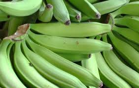
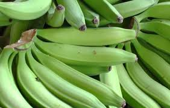

¡Delicioso sabor en la puerta de su casa, todos los días!

¿Quiénes somos?
Nuestro restaurante nace con el deseo de 4 personas de suplir alimento a las personas que trabajan y no tienen tiempo de prepararlo en casa, elaborando típicos almuerzos corrientes y especiales según el deseo del cliente. Trabajamos en el sector los Mártires vendiendo a personas cercanas y conocidas.


Sencillez es aquí la palabra clave
La naturaleza ha bendecido a los colombianos con un país fértil, lleno de pescados, plátanos de la costa,una asombrosa variedad de frutas tropicales, café, chocolate y productos lácteos directamente del campo; verduras y carnes baratas y frescas por doquier. La cocina mayoritaria otorga primacía a los platos poco aderezados, sin especias ni picantes, sin adornos ni guarniciones copiosas; en resumen, preparados con sencillez.


 


Como los Colombianos prefieren la cocina sencilla porque así saborean mejor los ingredientes
naturales, hemos basado nuestra inspiración en la cocina tradicional, sírvasele medio algo de arroz,
una guarnición de granos, un poco de carne o pescado, una ensalada y
un zumo
de fruta tropical, y quedará más que satisfecho.